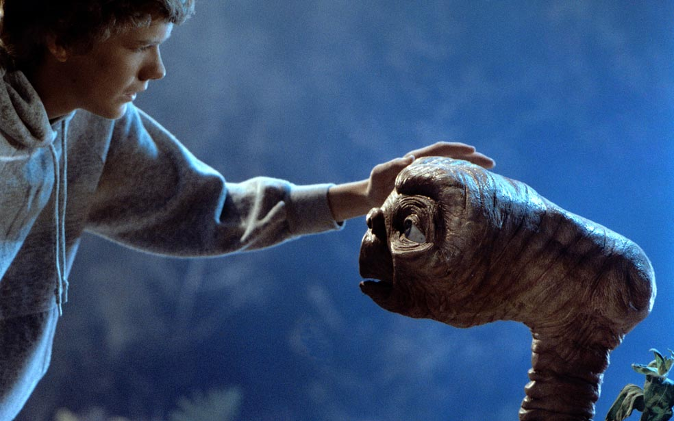
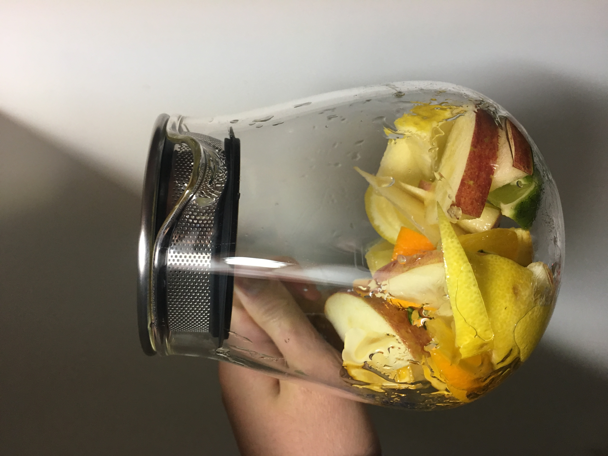

時間があるとき、それは映画を見るとき。
種類は何だって構わないアクション、ホラー、コメディー、ラブ、サスペンス、多種多様な映画のなか
そのときの気分にあったものを選ぶ。
でもやっぱり、８０、９０年代の少し古いものを選ぶことが多い。
自分が生まれてくる前にできた映画は知らないことをたくさん教えてくれる。
さらば青春の光はモッズの世界を教えてくれた。
やはり感動の名作も抜けない。ニューシネマパラダイスの旅立ちのシーンはいつ見ても泣けてしまう。

マレーシアで出会ったフルーツティーに感動を覚えたのが最初だった。
あんなに美味しいものがあっていいのかと疑問を持つぐらい美味かったのを覚えている。
ホットで甘くて癒されたあの味を再現するために、日々、フルーツティーを作っている。
茅ヶ崎にあるDude innという古着屋に行ったのがきっかけ。
アメリカの今なきバンドGrateful deadは1965年から95年まで活動していたバンド。
彼らの奏でる音楽に心底酔ってしまった。中毒的な音とヒッピーな文化、ファンの熱狂さに虜だ。
彼らの音楽を後継したDead＆companyの音楽を聴くために絶対アメリカへ行く。